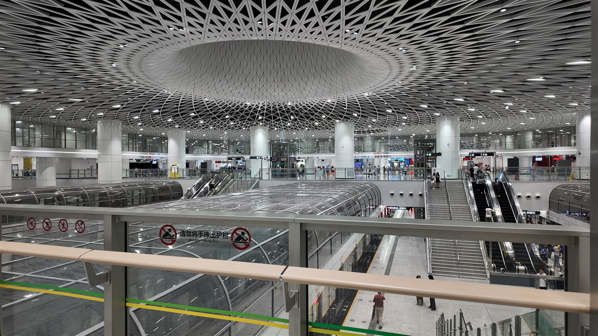
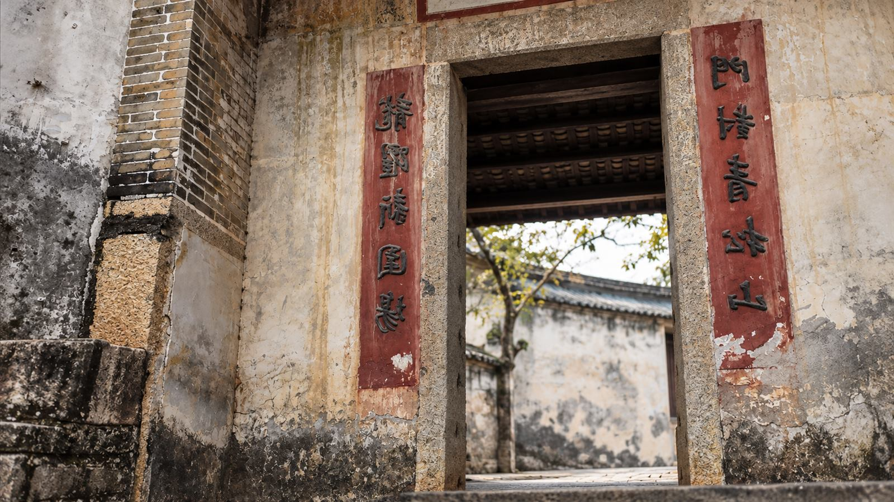
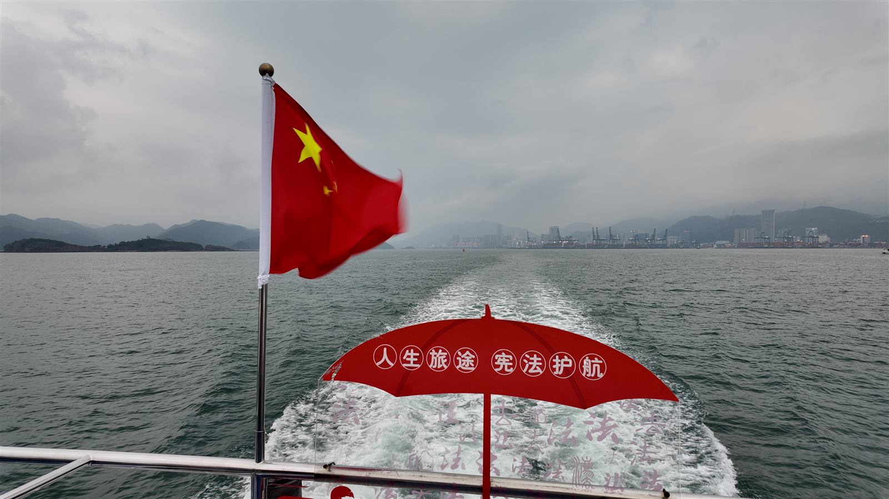
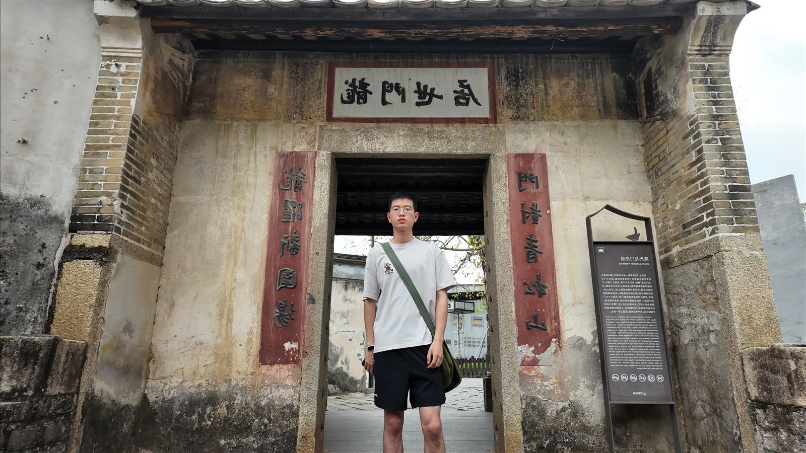
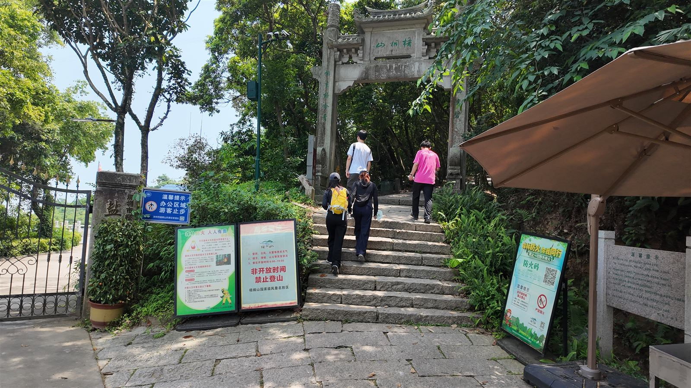
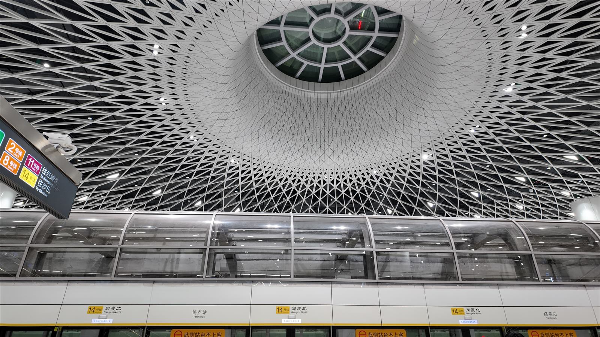

0505 / THE WAY I MOVE
我靠近世界的
方式，是出发。
从一段路、一座城市，或一个从未留意过的空间开始。对我来说，移动不是匆忙抵达，而是把视线重新交给未知。
我习惯停下来观察结构、光线和人的流动；这些细微的变化，会在下一次创作或思考里重新出现。

01 / ABOUT
我相信好的创作始于真实的体验。于是我出发、观察、记录，再把那些被忽略的瞬间，变成能够被看见的故事。

02 / SELECTED FRAMES
把经过的地方，留在画面里。


03 / POINT OF VIEW
“保持出发，
让每一次靠近
都算数。”

0505 / THE WAY I MOVE
从一段路、一座城市，或一个从未留意过的空间开始。对我来说，移动不是匆忙抵达，而是把视线重新交给未知。
我习惯停下来观察结构、光线和人的流动；这些细微的变化，会在下一次创作或思考里重新出现。
06 / A NOTE TO SELF
好奇让我提问，行动让我得到答案。我珍惜那些还没有结论的时刻——因为它们总能带我看见新的可能。

07 / CONNECT
hello@example.com · 中国